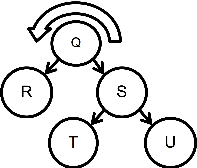
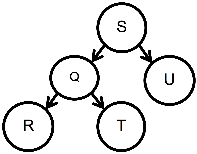
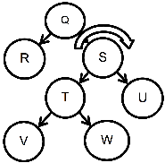
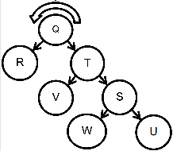
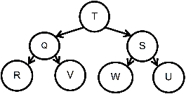

The benefit of AVL trees over other BSTs is that AVL trees automatically keep themselves relatively balanced. When an AVL tree discovers an imbalance (if any node’s left subtree height and right subtree height differ by more than one), it fixes that condition by rotating that node.
Think of rotation as a clockwise (Rotate Right) or counter-clockwise (Rotate Left) shift of both the node in question as well as its “tall” child node. Child is promoted above parent, reducing overall tree height.
Consider a large BST where in the midst of the tree, node A has a .right child: node B. Following an insertion somewhere below B, node A’s right subtree height is now two greater than its left subtree height. We should Rotate-Left node A. This will change the height for A and B, but how are all the other nodes affected? It would be expensive to move lots of nodes around whenever we do a rotation.
Fortunately, this isn’t the case. Think about where the rest of the nodes in the tree end up, when we do a rotation. To start with, nodes above this rotation do not move, nor do those in other parts of the tree. As a result, we only need to worry about A’s and B’s children. Those children have values that are either
a) less than A’s (conveniently located under A.left), or
b) greater than/equal to B’s (conveniently located under B.right), or
c) between A and B (currently conveniently located under B.left).
Chapter 19 – Trees, Part III
When we rotateLeft node A, it becomes the .left of node B. Let’s put their groups of children in place. Child nodes less than A (the entire A.left subtree) should stay where they are. Nodes greater than B (the B.right subtree) should also stay put. However, nodes in between might pose a problem. They can’t stay where they are (under B.left), because that’s where A has moved. What to do?
Let’s reason through this. Nodes in question have values less than B, so they go to B’s left somewhere. They have values greater than A, so they go to A’s right somewhere. After promoting B, A.right is available! Subtree previously located at B.left can move to A.right. Voila! Rotate-Left is complete.
Calling rotateLeft(Q) on first tree converts it to the second one. Cool! In most (not all) cases, one rotation corrects an imbalance. Drawing diagrams, you may discover corner cases where rotation does not succeed.

Revisiting the first tree: what if a tall T subtree causes our imbalance? After rotateLeft, T shifts from S.left to Q.right but does not move toward root; imbalance remains. Our objective was to pull a ‘tall grandchild’ toward root.
Note the next graph. If .left of a tall right child causes imbalance, we can’t just rotateLeft(Q). We must rotateRight(S) to transform it into this tree.

Then, rotateLeft(Q) transforms middle tree into (shallower) final tree.

AVL: Rotate Left
Create rotateLeft(node) method in the AVLTree class. First counter-rotate the child if needed, and as always update.balance attributes appropriately and inexpensively.
AVL: Rotate Right
Create a rotateRight(node) method for AVLTree. Counter-rotate the ‘tall child’ first, if needed, and keep all .balance attributes appropriately and inexpensively up-to-date.
Chapter 19 – Trees, Part III
Let’s review how nodes move, on our previous Right-Left Rotation. If .left of a tall right child causes imbalance (specifically T), then before we RotateLeft(Q) we RotateRight(S), transforming first tree into second tree. Then, RotateLeft(Q) transforms second tree into (shallower) third tree.
Note: in this example, the heights of child nodes (R, V, W, U) don’t change during the rotation process; the heights of all nodes in those subtrees are unaffected, all the way down to the leaves. Heightwise, the only affected nodes are red, black, and green – as well as their parent chain. For this reason, when fixing heights after a rotation we must follow any change upward to the parent, in case that parent’s height changed as well. In what scenario should we not continue to notify upward? Specifically, if after adding some value we see a node’s .balance change (say, from 1) to 0, then that node’s height did not change, and hence its parent chain is unaffected. Similarly, if after removing some value we see a node’s .balance change from 0 to some other value, then that node’s height did not change (try drawing a few on paper!). If a node’s height didn’t change, there’s no need to check its parent nodes. This significantly optimizes our Update Balance Indices process.
Now that we can 1) add and remove while updating.balance, as well as 2) rotate to bring trees back into balance, we are equipped to create the most powerful AVLTree methods: balanced add / remove.
AVL: Balanced Add
Using all you learned this chapter, create a balancedAdd(value) method for AVLTree class. Ensure that by the time it returns, our value is added, the tree is balanced, and all node attributes are updated and accurate.
AVL: Balanced Remove
Build balancedRemove(value) for our AVLTree class. Ensure that when method returns (true if removed, false if not found), the value is removed, tree is balanced, and all node attributes are updated and accurate.
AVL: Rebalance
Similar to repair() on regular BSTs, create rebalance() for AVLTrees. Just as repair() is not really needed (since we expect BSTs to insert and delete nodes correctly and never become invalid), similarly we could argue that rebalance() is unneeded since an AVLTree will continually keep itself balanced. Nonetheless, quickly build this, using other methods you’ve already created.
Chapter 19 – Trees, Part III
There are other types of self-balancing tree as well. One example is the Red-Black Tree.